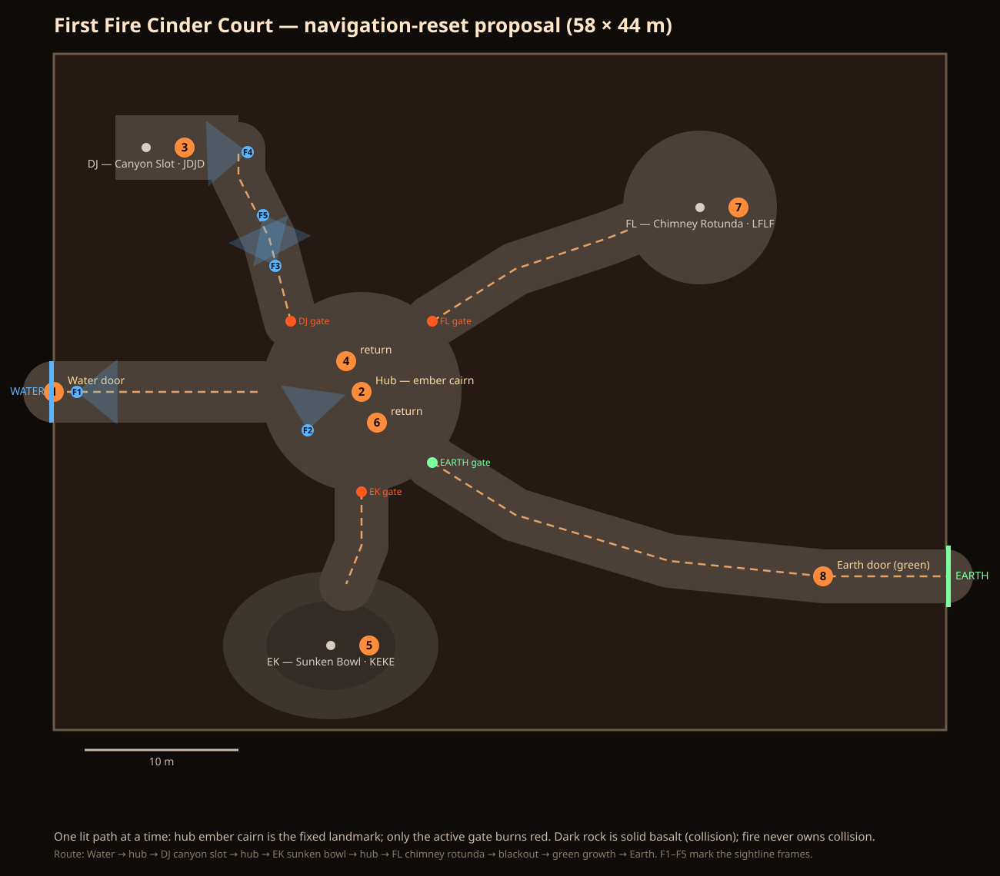
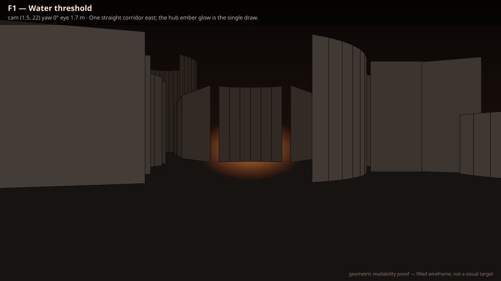
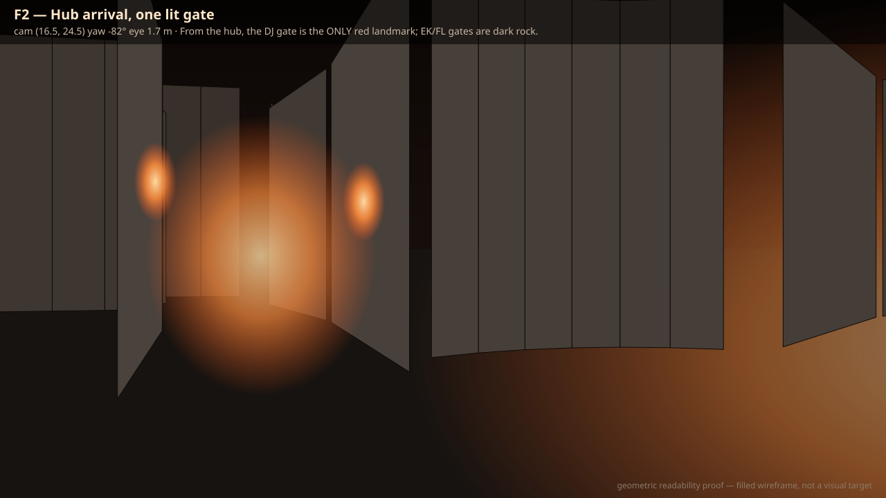
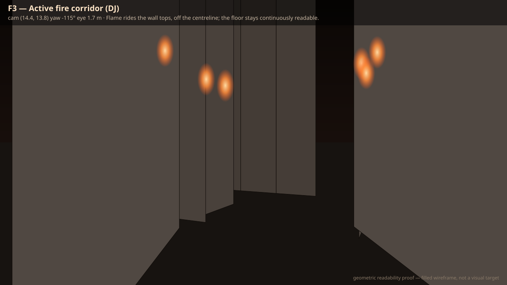
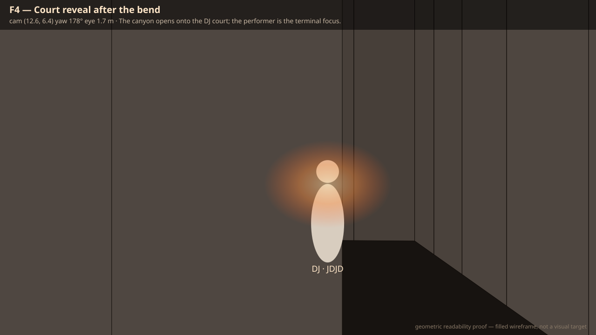
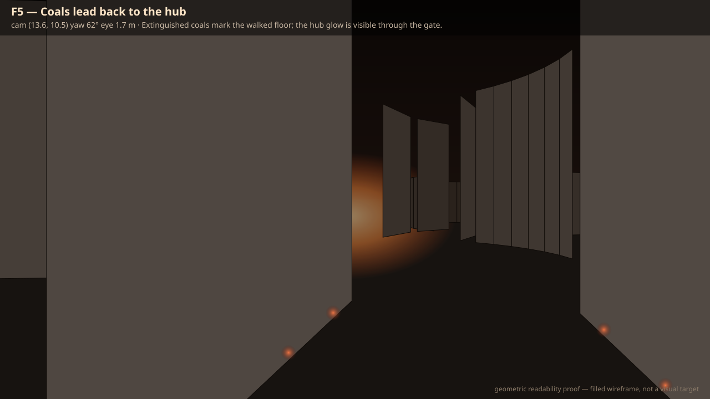

Pre-Gate-1 approval artifacts. Filled-wireframe geometric proofs of route readability — flame, coal, and growth marks are diagram glyphs, not visual targets. Approve or reject the topology; nothing downstream (Blender, GLB, runtime) is built from the rejected plan or from this one until approval.





